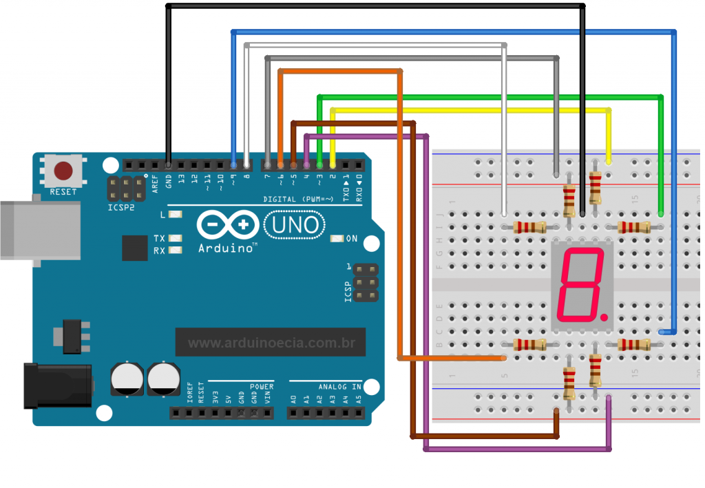
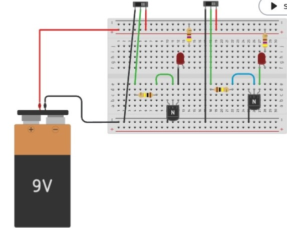
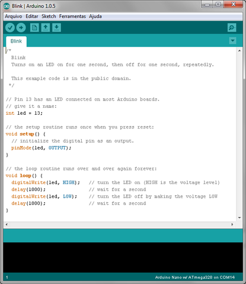
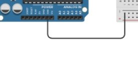
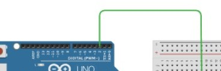
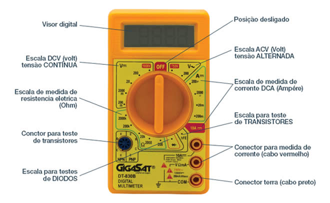

Eletroeletrônica
Resistores e código de cores

Circuito com 7 segmentos

sistema led com pilha

programa no IDE arduíno

Entrada analógica no arduíno

Entrada digital no arduíno

saída analógica no arduíno (pwm)
saída digital no arduíno

unidades de medida no multímetro

Principais Componentes
- Resistores - Componentes que limitam o fluxo de corrente elétrica
- Capacitores - Armazenam energia em forma de campo elétrico
- Indutores - Armazenam energia em forma de campo magnético
- Diodos - Permitem o fluxo de corrente em apenas uma direção
- Transistores - Amplificam ou controlam sinais elétricos
- Circuitos Integrados - Combinam múltiplos componentes em um único chip
Áreas de Aplicação
- Automação Industrial - Controle e otimização de processos industriais
- Telecomunicações - Sistemas de transmissão e recepção de dados
- Sistemas Embarcados - Computadores dedicados em dispositivos específicos
- Robótica - Desenvolvimento de máquinas automatizadas e robôs
- Energia Renovável - Sistemas de geração e controle de energia limpa
- Dispositivos Móveis - Smartphones, tablets e gadgets portáteis
Conceitos Fundamentais
- Tensão (Volt - V) - Diferença de potencial elétrico entre dois pontos
- Corrente (Ampère - A) - Fluxo de elétrons em um condutor
- Resistência (Ohm - Ω) - Oposição ao fluxo de corrente elétrica
- Potência (Watt - W) - Taxa de energia transferida por unidade de tempo
- Frequência (Hertz - Hz) - Número de ciclos por segundo em um sinal
Ferramentas Essenciais
- Multímetro - Instrumento para medir tensão, corrente e resistência
- Osciloscópio - Visualiza e analisa sinais elétricos em tempo real
- Fonte de Alimentação - Fornece energia elétrica controlada
- Estação de Solda - Realiza conexões permanentes entre componentes
- Protoboard - Placa para montagem e teste de circuitos temporários